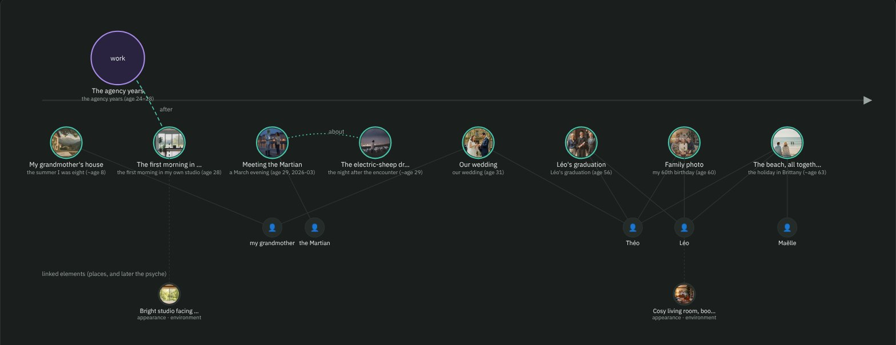
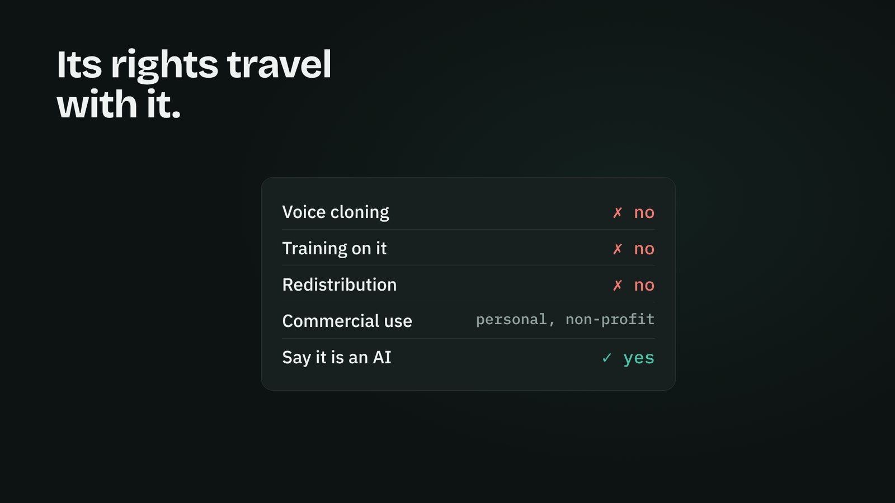
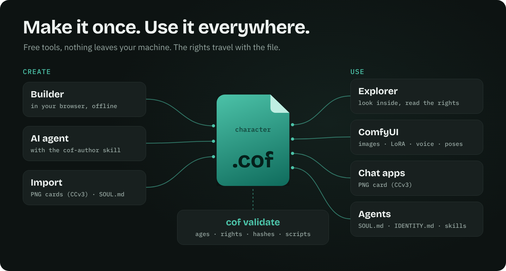

Character Open File
Vollständige KI-Charaktere in einer offenen Datei — portabel, mit ihren Rechten.
Vollständige KI-Charaktere in einer offenen Datei — portabel, mit ihren Rechten.
Ein offenes Dateiformat, das alles bündelt, was einen KI-Charakter ausmacht — Persönlichkeit, Aussehen, Stimme, 3D, Bewegung, Agenten-Skills, Erinnerungen und eine Psyche — mit eingebauten Rechten und Einwilligung. Dieselbe Datei öffnet sich in einer Chat-App, einem Bildgenerator, ComfyUI, einer Spiel-Engine oder einem Agenten.
Aktuell: 1.2.2, 15. November 2026 — der Builder bewahrt alles, was er nicht modelliert, Agenten-Hosts in cof-cli (ein Gedächtnis, zwei Zuhause), undatierte Erinnerungen im Explorer (Hinweise). Davor: 1.2.1, 8. November — Import aus Character.AI; 1.2, 8. November — eine Psyche; 1.1, 30. Oktober — Erinnerungen; 1.0, 17. Oktober. Jede 1.x-Datei bleibt gültig und von jedem 1.x-Tool lesbar.
Was passt in die Datei?
COF im Vergleich, Merkmal für Merkmal, mit Character Card V2 und V3 / .charx, Agent-Markdown, Letta Agent File, MacPaw Portable Memory und VRM — einschließlich dessen, was COF nicht tut.
Ihre Character.AI-Bots sichern
COF 1.2.1: Ihr Charakter und Ihre Unterhaltungen als seine privaten Erinnerungen, in einer offenen Datei — dann Aussehen, eine Stimme, Presets, eine Psyche. Alles geschieht in Ihrem Browser.
KI-Figuren haben jetzt ein Innenleben
COF 1.2: eine Psyche, die man lesen, bearbeiten und mitnehmen kann — jede Überzeugung an die Erinnerung gebunden, aus der sie entstand.
Wie viele Überzeugungen ergeben einen Menschen?
Was die Psychologie stattdessen gezählt hat, ein Simulator für eigene Zahlen, und was Big Five, Myers-Briggs-Typen, das Enneagram und die Astrologie wert sind.
KI-Figuren haben jetzt Erinnerungen
COF 1.1: Momente und Zeiträume eines Lebens, was sie empfanden, was sie für sich behalten, was verblasst.
Wie viel könnte ein Leben wiegen?
Wie viele Erinnerungen ein Mensch hat, wie viele Bytes sie bräuchten, und ein Rechner, um die Annahmen zu prüfen.
Zwei kurze Filme für 1.2.2, mit echten Dateien und echten Tools, nichts gestellt.
Ein Gedächtnis, zwei Zuhause
Clara wird nach OpenClaw exportiert und antwortet aus den Erinnerungen, die ihre Datei trägt. Erfährt der Agent etwas Neues, schreibt er eine Notiz; cof memory add holt sie als erlebte, persönliche Erinnerung in ihre Datei zurück. Nach Hermes exportiert, das sie nie kennengelernt hat, erinnert sie sich an den Zug von heute Morgen.
Wer sie ist
Ein Charakter ist mehr als ein Prompt. Ihre Psyche — elf Arten von Knoten, jeder an die Erinnerung, Person oder den Ort gebunden, aus dem er stammt — erkundet, durch die Zeit abgespielt, im Builder geschrieben und dann in die SOUL.md verwandelt, die ein Agent liest.

Ein ZIP-Archiv mit Manifest: die Identität des Charakters, seine Elemente in acht Kategorien — Persönlichkeit (eine Character Card V3 im Inneren, eine Psyche, Freitext), Aussehen, Identitätsgewichte, 3D, Stimme, Haltungen, Bewegung, Erinnerungen —, eine Bibliothek von Agentendateien und seine Rechte. Fast alles ist optional; was enthalten ist, wird geprüft.

Ein Preset ist eine einsatzbereite Kombination: eine Persönlichkeit, ein Aussehen, eine Stimme, ein Alter. Wechselt man Sprache oder Alter, folgt der Rest.

Momente und Zeiträume eines Lebens, jeweils mit wann, wo, mit wem, wie es sich damals und heute anfühlte, wie deutlich es zurückkehrt und was der Charakter lieber nicht erzählt. Was er mit einem Nutzer erlebt, wird in dieselbe Datei zurückgeschrieben — und geht mit ihr. Mehr lesen.

Werte, Überzeugungen, Wünsche, Ängste, Wunden, Vorlieben und Gewohnheiten als Graph kurzer Knoten, jeder mit einer Stärke, einer Zeitspanne und der Erinnerung, aus der er stammt. Personen, Orte und Gegenstände werden einmal benannt und von Erinnerungen und Psyche geteilt. Mehr lesen.

Berechtigungen, Einwilligung, wenn eine reale Person dargestellt wird, und Herkunft sind Teil der Datei. Jedes Preset deklariert ein Alter; Nacktheit oder intime Inhalte mit Minderjährigen machen eine Datei ungültig, nicht bloß markiert.

Ein Ensemble reist zusammen, und jeder Charakter behält sein eigenes Aussehen, seine Stimme, Presets und Rechte.

Erstellen mit dem Builder, einem KI-Agenten oder einem Import; nutzen im Explorer, in ComfyUI, Chat-Apps und Agenten-Hosts. cof validate prüft Alter, Rechte, Hashes und Skripte.

Builder
Fotos, eine Karte und eine Stimmprobe ablegen; eine .cof erhalten. Offline, im Browser.

Explorer
Jede .cof öffnen: Presets, Aussehen, Stimmen, Posen, Erinnerungen, Psyche, Rechte. Nur Lesen.
Ihren Export aus CAI Tools oder PersonaText ablegen, drei Dinge prüfen, eine .cof herunterladen: Ihr Charakter und Ihre Unterhaltungen als seine Erinnerungen, privat gehalten. Dann weiter als ein Backup — Aussehen, eine Stimme, Presets, eine Psyche. Alles geschieht in Ihrem Browser. Ihre Charaktere sichern →
Eine .cof enthält eine gültige Character Card V3 und exportiert in eine ccv3-PNG-Karte, ein Karten-JSON, SOUL.md / IDENTITY.md, einen OpenClaw-Workspace und ein Hermes-Profil; ein VRM-Avatar darin ist eine gewöhnliche Datei. Bestehende Tools müssen nichts umschreiben. Was in die Datei passt, im Vergleich →
Spezifikation
Der normative Text, auf Englisch und Französisch.
COF implementieren
Lesen, Schreiben, Rechte, Sicherheit, Konformität.
Beispiele
Neun konforme Charaktere, von reinem Text bis zum Vorzeigebeispiel mit zwölf Presets.
Für KI-Agenten
Der Skill cof-author: Ein Agent erstellt und validiert eine .cof.
Roadmap
Als Nächstes: ein Player, assistierte Erstellung, eine Galerie von Startcharakteren, ein professionelles Profil.
Changelog
Jede Version: was sich geändert hat und warum.